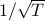

|
Publications
Preprints
Stochastic Primal-Dual Algorithms with Faster Convergence than  for Problems without Bilinear Structure [arXiv]
Yan Yan, Yi Xu, Qihang Lin, Lijun Zhang, Tianbao Yang
arXiv preprint arXiv:1904.10112 (2019). Under review.
Stochastic Optimization for Non-convex Inf-Projection Problems [arXiv]
Yan Yan, Yi Xu, Lijun Zhang, Xiaoyu Wang, Tianbao Yang
arXiv preprint arXiv:1908.09941 (2019).
A Simple And Effective Framework for Pairwise Deep Metric Learning [arXiv]
Qi Qi, Yan Yan, Zixuan Wu, Xiaoyu Wang, Tianbao Yang
arXiv preprint arXiv:1912.11194 (2019).
Refereed Conference Publications
Learning Discriminators as Energy Networks in Adversarial Learning [arXiv]
Pingbo Pan, Ping Liu, Yan Yan, Tianbao Yang, Yi Yang
In Thirty-Fourth AAAI Conference on Artificial Intelligence (AAAI) 2020.
Stagewise Training Accelerates Convergence of Testing Error Over SGD [arXiv]
Zhuoning Yuan, Yan Yan, Rong Jin, Tianbao Yang
Thirty-third Conference on Neural Information Processing Systems (NeurIPS) 2019.
Multi-Level Visual-Semantic Alignments with Relation-Wise Dual Attention Network for Image and Text Matching
Zhibin Hu*, Yongsheng Luo*, Jiong Lin*, Yan Yan and Jian Chen
In International Joint Conference on Artificial Intelligence (IJCAI) 2019.
Adaptive Sparse Confidence-Weighted Learning for Online Feature Selection
Yanbin Liu, Yan Yan, Ling Chen, Yahong Han and Yi Yang
In Thirty-Third AAAI Conference on Artificial Intelligence (AAAI) 2019.
Deep adversarial attention alignment for unsupervised domain adaptation: the benefit of target expectation maximization [arXiv]
Guoliang Kang, Liang Zheng, Yan Yan, and Yi Yang
In Proceedings of the European Conference on Computer Vision (ECCV) 2018.
A Unified Analysis of Stochastic Momentum Methods for Deep Learning [arXiv]
Yan Yan, Tianbao Yang, Zhe Li, Qihang Lin and Yi Yang
In International Joint Conference on Artificial Intelligence (IJCAI) 2018.
Style Aggregated Network for Facial Landmark Detection [arXiv]
Xuanyi Dong, Yan Yan, Wanli Ouyang and Yi Yang
In IEEE Conference on Computer Vision and Pattern Recognition (CVPR) 2018.
Exploit the Unknown Gradually: One-Shot Video-Based Person Re-Identification by Stepwise Learning
Yu Wu, Yutian Lin, Xuanyi Dong, Yan Yan, Wanli Ouyang and Yi Yang
In IEEE Conference on Computer Vision and Pattern Recognition (CVPR) 2018.
A Framework of Online Learning with Imbalanced Streaming Data
Yan Yan, Tianbao Yang, Yi Yang, Jianhui Chen
In Thirty-First AAAI Conference on Artificial Intelligence (AAAI) 2017.
Homotopy Smoothing for Non-Smooth Problems with Lower Complexity than O(1/) [arXiv]
Yi Xu*, Yan Yan*, Qihang Lin, Tianbao Yang
In Neural Information Processing Systems (NeurIPS) 2016.
Robust Semi-supervised Learning through Label Aggregation
Yan Yan, Zhongwen Xu, Ivor W. Tsang, Guodong Long, Yi Yang
In Thirtieth Conference on Artificial Intelligence (AAAI) 2016.
Learning Sparse Confidence-Weighted classifier on Very High Dimensional Data
Mingkui Tan, Yan Yan, Li Wang, Anton Van Den Hengel, Ivor W. Tsang, Qinfeng (Javen) Shi
In Thirtieth Conference on Artificial Intelligence (AAAI) 2016.
Scalable Maximum Margin Matrix Factorization by Active Riemannian Subspace Search
Yan Yan, Mingkui Tan, Ivor W. Tsang, Yi Yang, Chengqi Zhang and Qinfeng (Javen) Shi
In International Joint Conference on Artificial Intelligence (IJCAI) 2015, 3988-3994.
Hybrid Heterogeneous Transfer Learning through Deep Learning
Joey Tianyi Zhou, Sinno Jialin Pan, Ivor W. Tsang and Yan Yan
In Twenty-Eighth Conference on Artificial Intelligence (AAAI) 2014, 2213-2219.
Refereed Journal Publications
Progressive Learning for Person Re-Identification With One Example
Yu Wu, Yutian Lin, Xuanyi Dong, Yan Yan, Wei Bian and Yi Yang
IEEE Transactions on Image Processing, vol. 28, no. 6, pp. 2872 - 2881, Jun. 2019.
Late Fusion via Subspace Search With Consistency Preservation
Xuanyi Dong, Yan Yan, Mingkui Tan, Yi Yang and Ivor W. Tsang
IEEE Transactions on Image Processing, vol. 28, no. 1, pp. 518-528, Jan. 2019.
Fast and Low Memory Cost Matrix Factorization: Algorithm, Analysis and Case Study
Yan Yan, Mingkui Tan, Ivor W. Tsang, Yi Yang, Qinfeng Shi and Chengqi Zhang
Accepted by IEEE Transactions on Knowledge and Data Engineering, doi=10.1109/TKDE.2018.2882197.
Image Classification by Cross-Media Active Learning with Privileged Information
Yan Yan, Feiping Nie, Wen Li, Chenqiang Gao, Yi Yang, Dong Xu
IEEE Transactions on Multimedia, vol. 18, no. 12 (2016): 2494-2502.
Semi-Supervised Feature Selection via Spline Regression for Video Semantic Recognition
Yahong Han, Yi Yang, Yan Yan, Zhigang Ma, Nicu Sebe and Xiaofang Zhou
IEEE Transactions on Neural Networks and Learning Systems, vol. 26, no. 2 (2015): 252-264.
Multiple Graph Unsupervised Feature Selection
Xingzhong Du, Yan Yan, Pingbo Pan, Guodong Long and Lei Zhao
Signal Processing 120 (2016): 754-760.
Graph-Based Clustering and Ranking for Diversified Image Search
Yan Yan, Gaowen Liu, Sen Wang, Jian Zhang and Kai Zheng
Multimedia Systems, vol. 23, no. 1 (2017): 41-52.
Subcellular localization prediction for human internal and organelle membrane proteins with projected gene ontology scores
Pufeng Du, Yang Tian and Yan Yan
Journal of Theoretical Biology 313 (2012): 61-67.
Workshop Papers
Sharp Analysis of Simple Restarted Stochastic Gradient Methods for Min-Max Optimization
Yan Yan, Yi Xu, Qihang Lin, Wei Liu, Tianbao Yang
Bridging Game Theory and Deep Learning Workshop NeurIPS 2019 (Smooth Games Optimization and Machine Learning Series).
|